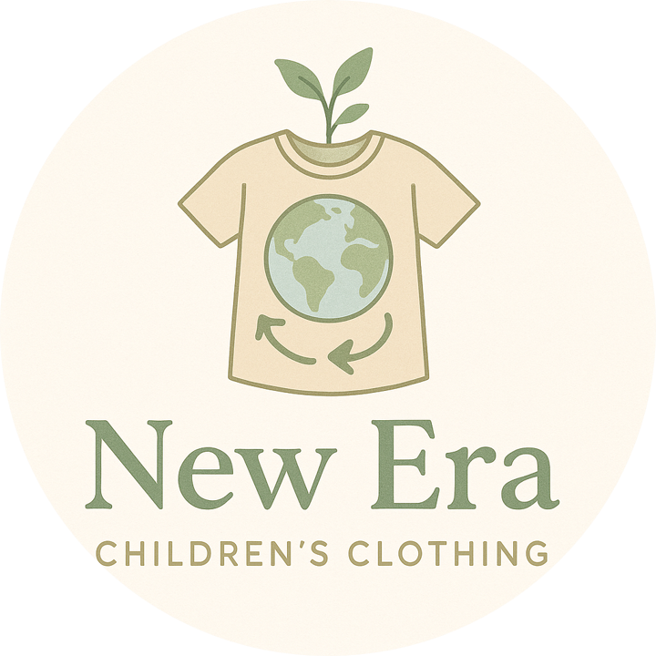
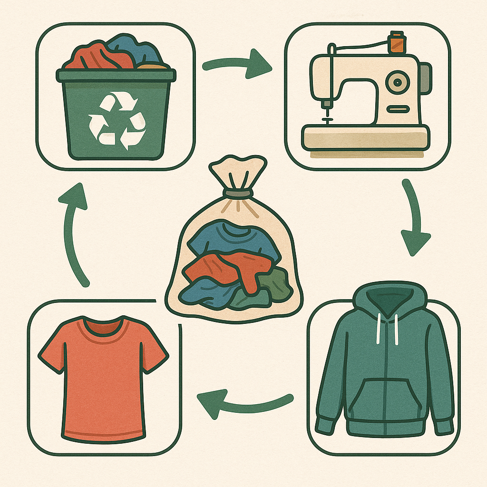

At New Era, we are passionate about making sustainable fashion accessible to everyone. Our goal is to offer high-quality second-hand baby clothing made from recycled and recyclable materials, helping families save money while protecting the planet.
All our clothing items are crafted or carefully selected from sustainable, eco-friendly materials. Whether it's organic cotton, recycled fabrics, or biodegradable textiles, we prioritize products that are gentle on the Earth.
From collecting pre-loved baby clothes to refurbishing and reselling them, our process is designed with sustainability in mind. We inspect every item thoroughly to ensure it meets our high standards of quality, cleanliness, and durability before it reaches your hands.

Have any questions? Want to learn more about our mission? Feel free to reach out!